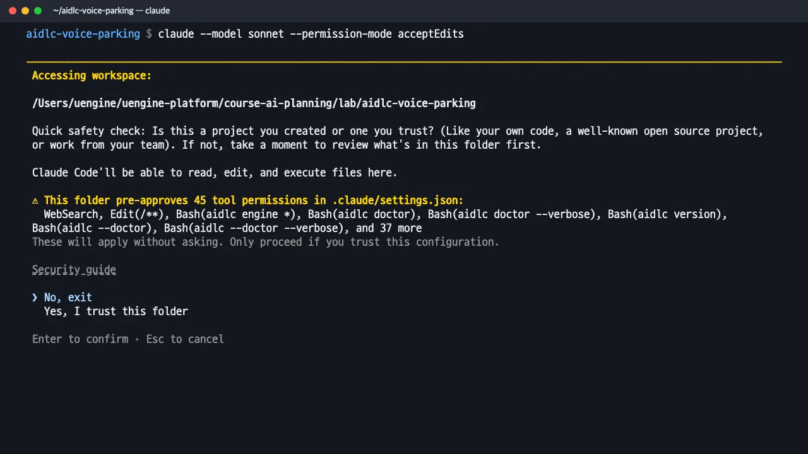
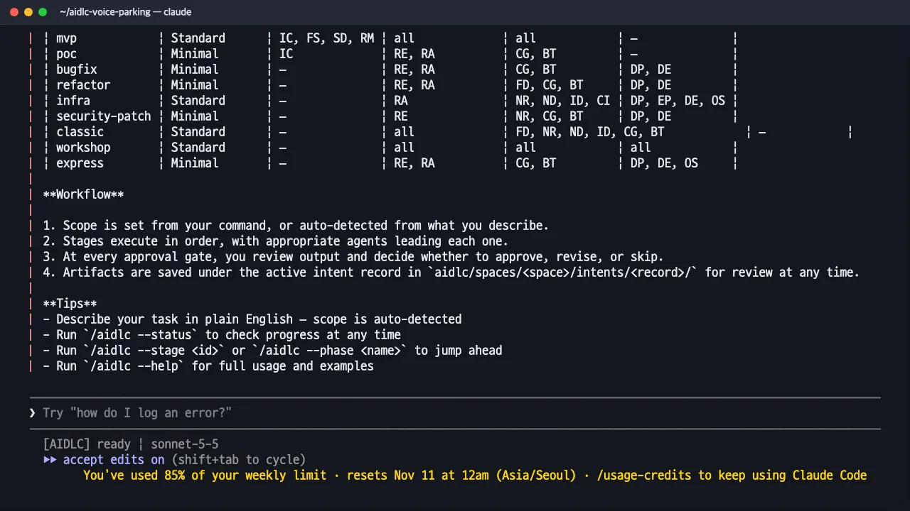
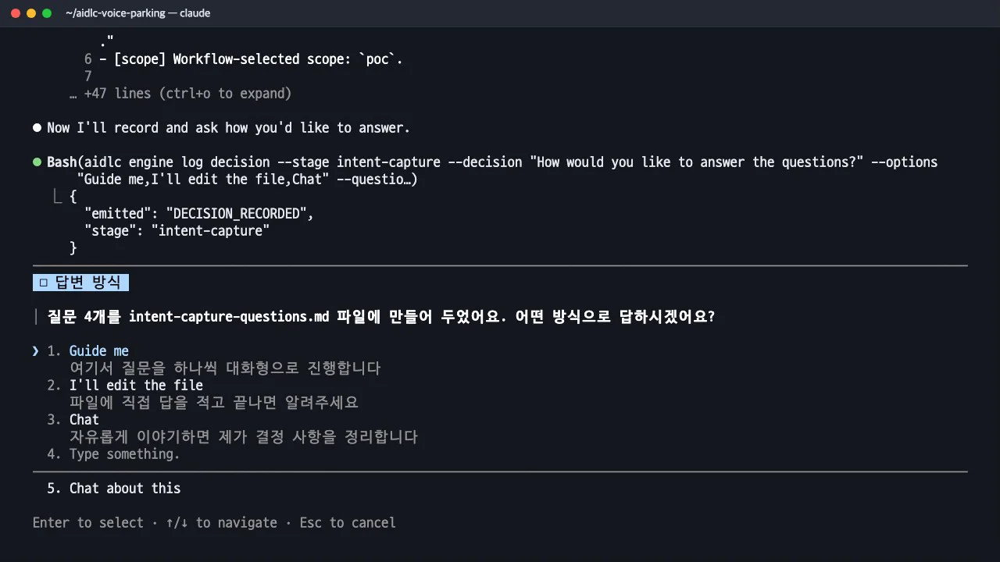
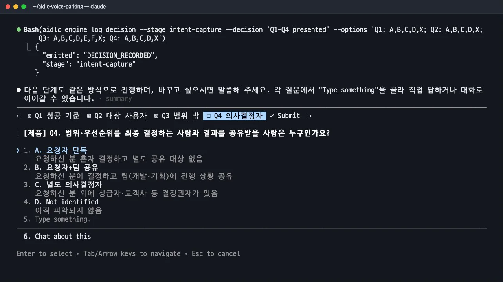
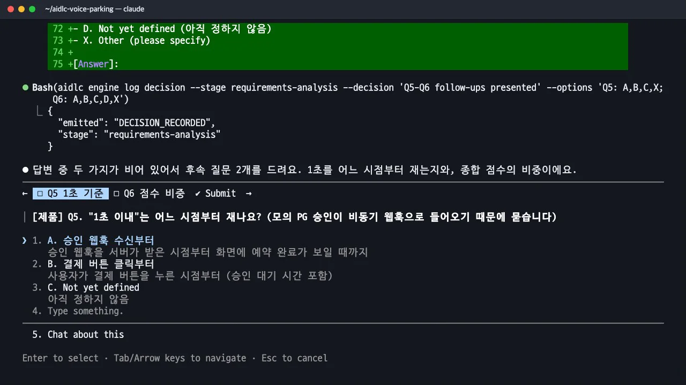
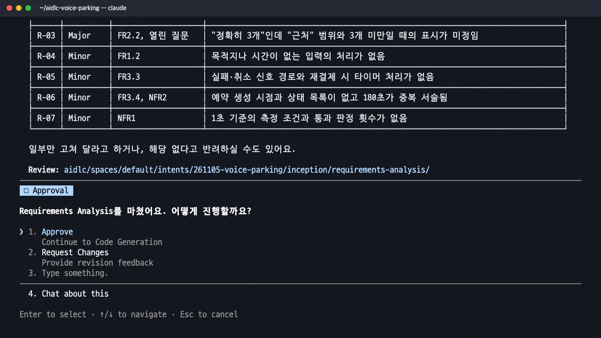

Claude Code를 켜고
/aidlc poc로 VoiceParking을 요청합니다. AI-DLC가 만든 질문에 답하고, "바로 예약 완료"와 "비동기 웹훅 승인"이 부딪히는 곳을 AI-DLC가 후속 질문으로 짚는 장면, 두 번의 승인 게이트를 따라갑니다.
무엇을 · 왜#
요청 한 줄을 받은 AI는 빠진 내용을 추측으로 채우기 쉽습니다. AI-DLC는 코드를 쓰기 전에 질문지를 만들고, 사람이 답한 것만 문서에 씁니다. 각 문장에 [Q2], [desc] 같은 출처가 붙어 있어 추측으로 작성한 문장을 찾기 쉽습니다. 스테이지가 끝날 때마다 검토 에이전트가 문서를 따로 검토하고, 사람이 승인해야 다음 스테이지로 넘어갑니다.
poc 스코프의 스테이지는 다음과 같습니다. 이 장에서는 의도 정리와 요구사항 분석을 다룹니다.
| 스테이지 | 하는 일 | 이 실습 |
|---|---|---|
| 0.1~0.3 초기화 | 작업 기록 폴더, 새 프로젝트/기존 코드 판별, 상태 파일 | 자동(1초 미만) |
| 1.1 의도 정리 | 왜, 누구를 위해, 어디까지 | 질문 4개 |
| 2.1 역설계 | 기존 코드 분석 | 새 프로젝트라 건너뜀 |
| 2.3 요구사항 분석 | 시험할 수 있는 요구사항 | 질문 4개 + 후속 2개 |
| 3.5 코드 생성 | 계획, 코드, 시험 | 7장 |
| 3.6 빌드와 테스트 | 전체 빌드와 시험 | 7장 |
따라 하기#
- Claude Code 켜기. 실습 폴더에서 Sonnet 모델, acceptEdits 모드(파일 편집은 묻지 않고 명령 실행은 묻기)로 실행합니다. 처음 여는 폴더이므로 신뢰 여부를 묻고, AI-DLC가
.claude/settings.json에 미리 허용해 둔 도구 권한 45개를 보여 줍니다. 직접 만든 실습 폴더이므로 신뢰합니다. 회사 저장소라면 팀이 이 목록을 검토해야 합니다.claude --model sonnet --permission-mode acceptEdits
신뢰 확인과 미리 허용된 권한 45개 - AI-DLC 안내. 폴더를 신뢰하면 AI-DLC 안내가 나옵니다. 스코프마다 어떤 스테이지를 거치는지 표로 보여 줍니다(IC 의도 정리, RE 역설계, RA 요구사항 분석, CG 코드 생성, BT 빌드와 테스트). 아래 상태줄의
[AIDLC] ready는 AI-DLC의 진행 상태를 나타냅니다.
스코프별 스테이지 표 - 요청.
/aidlc뒤에 스코프와 요청을 씁니다.--summary-confirmation off는 답을 요약해 다시 확인받는 단계만 끕니다. 질문과 승인 게이트는 그대로입니다. 마지막 문장 "결제가 끝나면 바로 예약 완료를 보여 줘야 해"를 기억해 두세요./aidlc poc --summary-confirmation off 사용자가 음성 텍스트('강남역 근처 2시간 주차권 찾아줘')를 보내면 최적 주차권을 추천하고 결제와 예약을 처리하는 VoiceParking 프로토타입을 만들어 줘. 프런트는 Vue 3, 백엔드는 Java Spring Boot로 하고, 백엔드 모듈이 여럿이면 마이크로서비스로 나눠 줘. 결제가 끝나면 사용자에게 바로 예약 완료를 보여 줘야 해. - 답하는 방법 고르기. 약 75초 뒤 작업 기록(
aidlc/spaces/default/intents/261105-voice-parking/)과 질문지intent-capture-questions.md가 생성되고, 답변 방법을 묻습니다. Guide me(한 문항씩 대화형), I'll edit the file(파일에 직접 적기), Chat(자유 대화) 가운데 Guide me를 고릅니다. 한 번 고르면 다음 스테이지도 같은 방식으로 진행합니다.
답하는 방법 세 가지 - 의도 정리 질문 4개. 이번 실행에서 받은 질문과 답입니다.
| 질문 | 고른 답 |
|---|---|
| Q1 성공 기준 | B. 추천 이유 설명 (데모 흐름 + 왜 최적인지 화면에서 설명) |
| Q2 대상 사용자 | A. 음성 선호 운전자 |
| Q3 범위 밖(여럿 선택) | 실제 PG 연동, 실제 주차장 데이터, 진짜 음성 인식, 계정 관리 |
| Q4 의사결정자 | B. 요청자가 결정하고 팀에 공유 |
여러 답을 고르는 질문은 Enter로 선택하고 아래의 Next로 넘어갑니다. 마지막에는 답 전체를 보여 주고 Submit answers로 제출할지 묻습니다.

범위 밖 고르기(여럿 선택) - 첫 승인 게이트. 약 2분 반 뒤
intent-statement.md,stakeholder-map.md가 생성되고 검토 에이전트가 우려 4건을 짚습니다. Approve를 고르면 요구사항 분석으로 넘어갑니다. 의도 문서의 문장 끝에는[desc](처음 요청),[Q2](2번 답) 같은 출처가 붙어 있습니다.## Target Customer - 주 사용자는 운전 중이거나 손이 자유롭지 않아 음성으로 빠르게 주차장을 찾고 싶은 일반 운전자다. [Q2] - 요구사항 분석 질문. 이번에는 시험으로 확인할 수 있는 수치를 묻습니다. 최적의 기준은 D(종합 점수), 후보 수는 B(최적 1 + 비교 2), 결제 실패는 A(안내 후 재결제)를 골랐습니다. "바로"가 몇 초인지 묻는 Q2에는 Type something을 골라 직접 씁니다.
1초 이내. 그리고 모의 PG의 결제 승인은 비동기 웹훅으로 들어오고, 180초 안에 승인이 오지 않으면 예약을 자동 취소해 줘. - 서로 충돌하는 답을 짚는 후속 질문. 답을 받은 AI-DLC가 후속 질문 2개를 제시했습니다. 그중 하나는 다음과 같습니다.
> Q5. "1초 이내"는 어느 시점부터 재나요? (모의 PG 승인이 비동기 웹훅으로 들어오기 때문에 묻습니다)
!!! tip "이 장의 산출물 · GitHub"
실습을 실제로 실행한 결과가 공개 저장소 uengine-oss/tutorial-aidlc-handson의
level1-poc/폴더에 있습니다. 본문의 파일 이름을 눌러도 해당 파일이 열립니다. -ideation/intent-capture/— 의도 문서·이해관계자 표·질문 파일 -inception/requirements-analysis/— 요구사항·질문 파일·검토 처음 요청의 "결제가 끝나면 바로 예약 완료"와 방금 답한 "승인은 비동기 웹훅"을 함께 보면, 결제 버튼을 누른 시점에는 아직 승인되지 않은 상태입니다. 가이드에서 말한 "모순 감지"는 실제로 이런 후속 질문으로 나타납니다. A(승인 웹훅을 서버가 받은 시점부터)를 고르고, 종합 점수 비중은 직접 "가격 40%, 거리 40%, 이용 시간 적합도 20%"로 답했습니다.
후속 질문: 1초를 어디서부터 재나 - 두 번째 승인 게이트. 약 2분 뒤
requirements.md가 작성됩니다. 결제 대기 → 승인 웹훅 → 확정 상태, 180초 자동 취소, "승인 웹훅 수신부터 화면 표시까지 1초 이내"라는 비기능 요구사항이 반영되었습니다. 검토 에이전트가 7건(R-01~R-07)을 짚었고, 그대로 Approve를 선택했습니다. | ID | 요구사항 | 합격 기준 | |---|---|---| | FR2.1 | 종합 점수: 가격 40%, 거리 40%, 이용 시간 적합도 20% | 같은 입력·같은 샘플 데이터에서 항상 같은 점수와 순위 | | FR3.2 | 모의 결제 승인은 비동기 웹훅으로 전달 | 승인 웹훅을 받으면 결제가 승인 상태로 | | FR3.4 | 180초 안에 승인이 없으면 예약 자동 취소 | 승인 없이 180초가 지나면 취소 상태 | | NFR1 | 예약 완료 표시 시간 | 승인 웹훅 수신부터 화면 표시까지 1초 이내 |
요구사항 검토 결과와 승인 게이트
확인 문제#
질문에 "아직 정하지 않음"을 고르면 어떻게 되나요?
문서의 「Assumptions & Open Questions」에 미정 항목으로 남습니다. 이번 요구사항에도 "근처의 범위", "후보가 3개보다 적을 때 표시"가 미정 항목으로 남았고, 코드 생성 계획에서 처리 방법을 정했습니다(반경 1,000m, 있는 만큼 보여 주고 안내).
후속 질문 Q5가 없었다면 무엇이 문제였을까요?
"1초 이내"를 결제 버튼을 누른 시점부터 재면, 승인을 기다리는 시간(최대 180초)이 포함되어 요구사항을 지킬 수 없습니다. 측정 시작점을 웹훅 수신으로 정하면서 결제 대기 상태와 실시간 알림(SSE)을 설계하게 되었습니다.